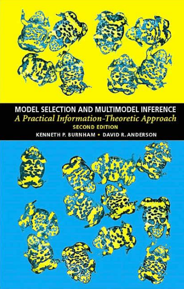
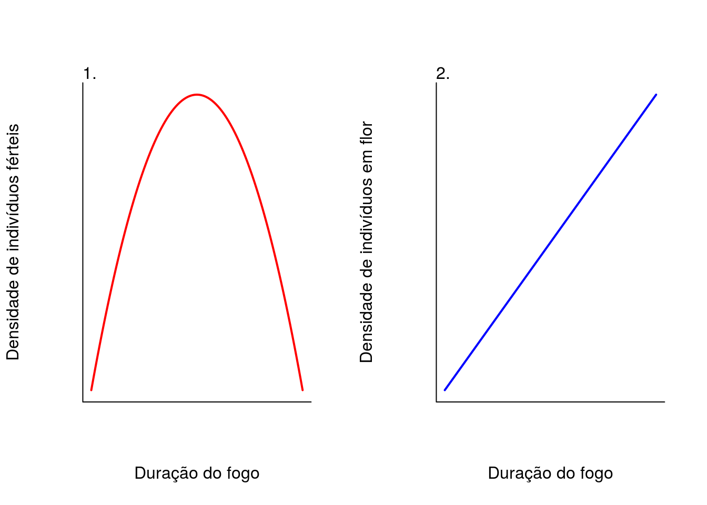
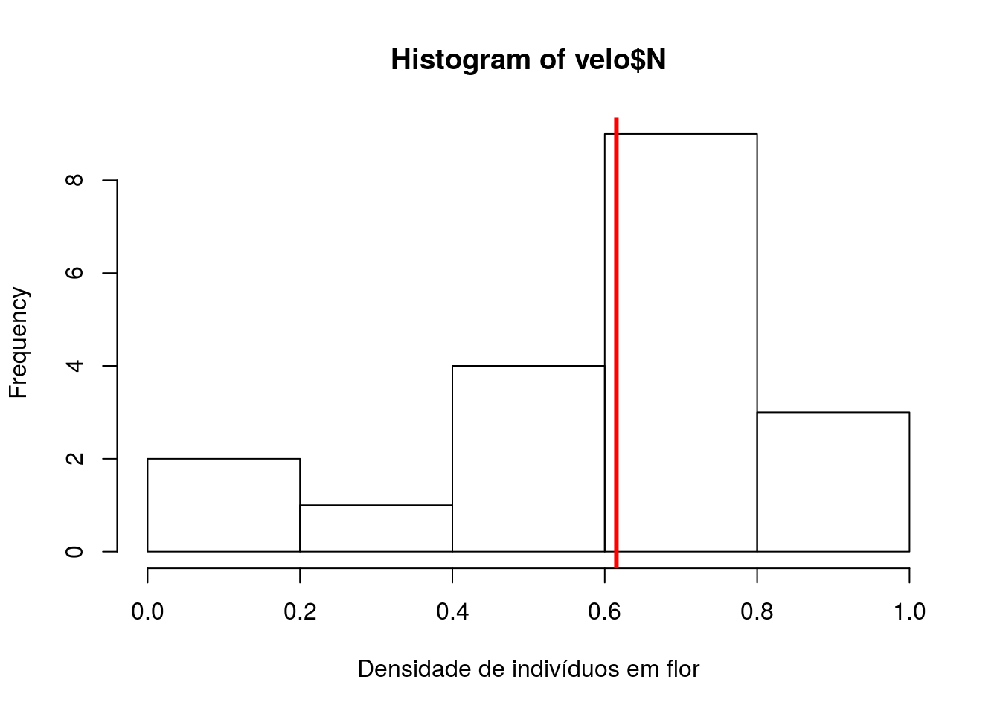
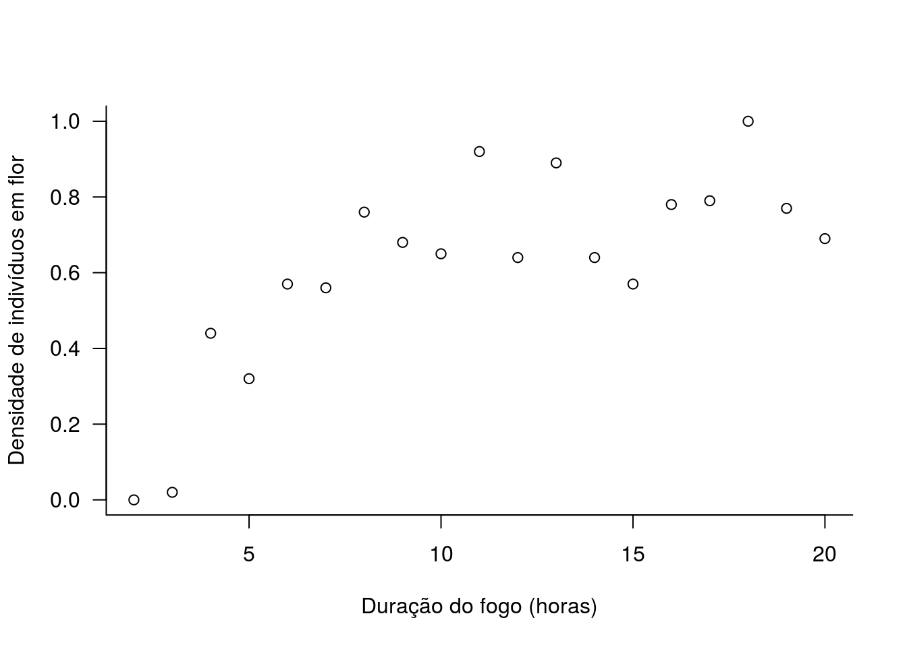
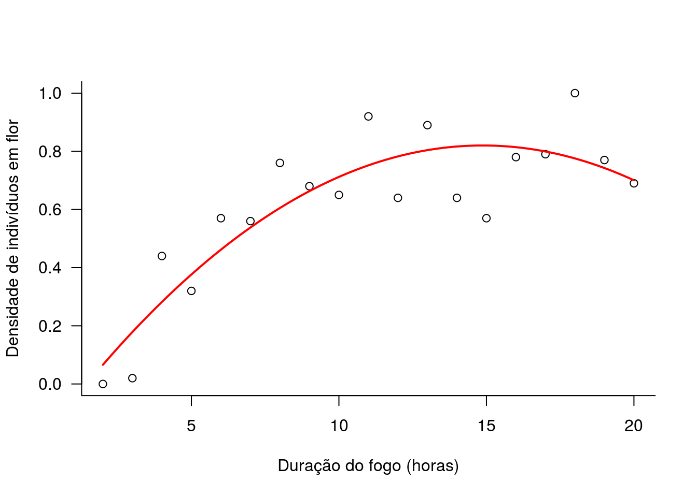
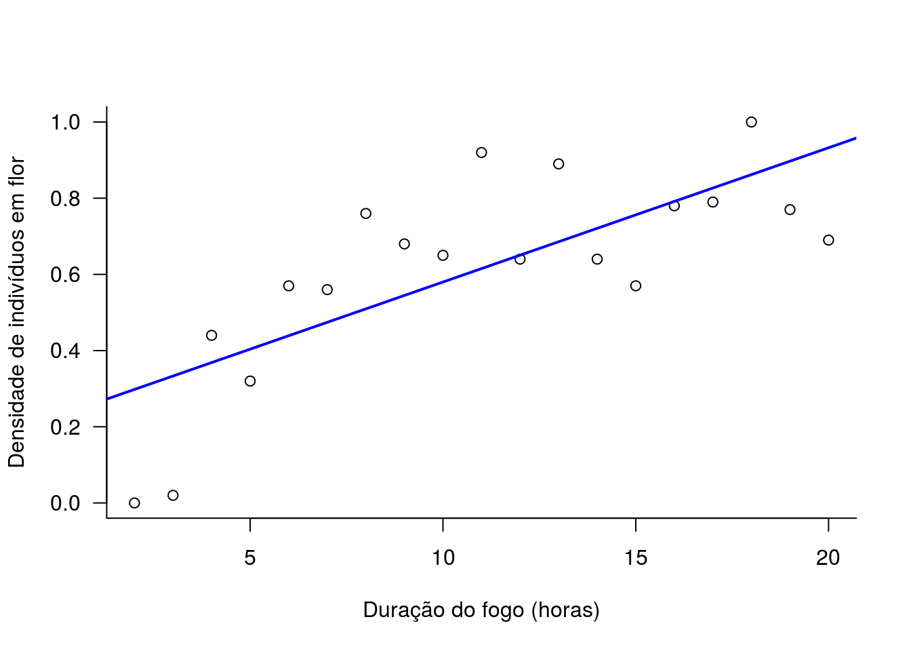
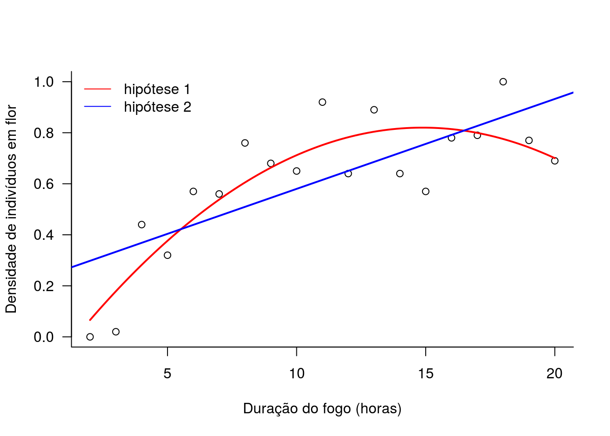
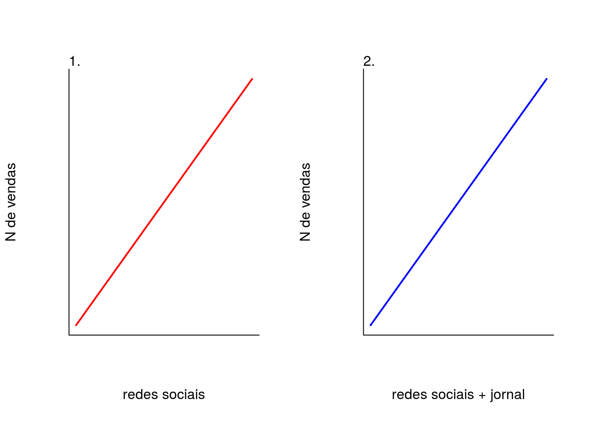
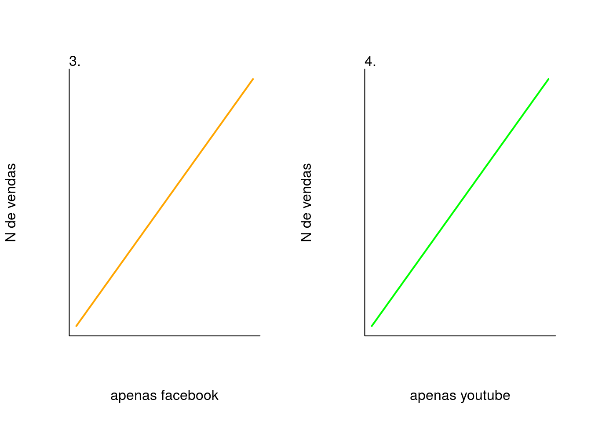
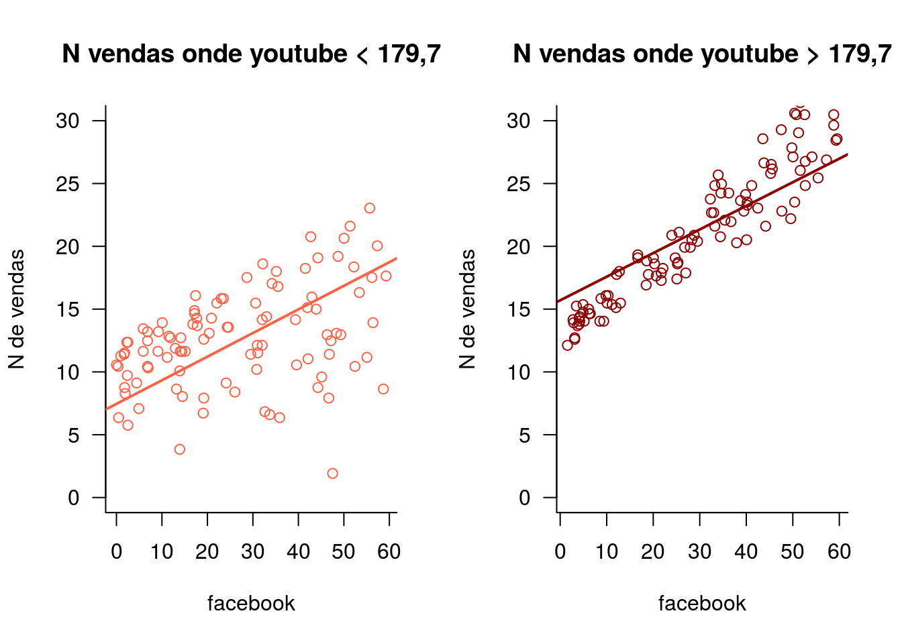

Antes de começar, lembre-se sempre de Burnham & Anderson (2002):
“we recommend more emphasis on thinking!”
Nos tempos de hoje, nunca é demais reforçar que precisamos dedicar tempo a pensar e elaborar nossas hipóteses.
Nesta pRática vamos rodar dois exemplos de seleção de modelos.
Connell em 1978 propôs a hipótese do distúrbio intermediário que postula que em condições intermediárias de frequência ou intensidade de distúrbio, a riqueza de espécies é maior. Essa teoria também se aplica à densidade de polulações de determinadas espécies.
Vamos testar a hipótese do distúrbio intermediário na dinâmica da população de Vellozia sincorana (Velloziaceae) em campos rupestres sujeita a distúrbio por fogo. Sabe-se que plantas de V. sincorana são resistentes ao fogo e florescem após incêndios. Foram realizados experimentos controlados de fogo em intensidades diferentes (maior ou menor duração) e quantificaram o número de indivíduos em floração após o incêndio.
Para isso, pesquisadores investigaram a densidade de indivíduos em floração após diferentes intensidades de fogo. A variável resposta é a densidade de indivíduos férteis e a variável preditora é a intensidade do fogo.
Pergunta: Hipótese do distúrbio intermediário explica o padrão de floração de V. sincorana?
Hipóteses:
Sob condições intermediárias de perturbação do fogo, haverá maior floração na população de V. sincorana
Se V. sincorana for muito resistente ao fogo, quanto maior a intensidade do fogo, maior será floração na população
Previsão:

# lendo os dados
velo <- read.csv("dados/vellozia.csv")Fazendo a inspeção dos dados.
# primeiras 6 linhas
head(velo)## fogo N
## 1 2 0.00
## 2 3 0.02
## 3 4 0.44
## 4 5 0.32
## 5 6 0.57
## 6 7 0.56# estrutura
str(velo)## 'data.frame': 19 obs. of 2 variables:
## $ fogo: int 2 3 4 5 6 7 8 9 10 11 ...
## $ N : num 0 0.02 0.44 0.32 0.57 0.56 0.76 0.68 0.65 0.92 ...# sumario
summary(velo)## fogo N
## Min. : 2.0 Min. :0.0000
## 1st Qu.: 6.5 1st Qu.:0.5650
## Median :11.0 Median :0.6500
## Mean :11.0 Mean :0.6153
## 3rd Qu.:15.5 3rd Qu.:0.7750
## Max. :20.0 Max. :1.0000Vamos olhar para a distribuição dos dados densidade de indivíduos em flor.
# histograma dos valores de densidade
hist(velo$N, xlab="Densidade de indivíduos em flor")
# plotando em vermelho a media
abline(v=mean(velo$N), col="red", lwd=3)
Vamos olhar para a relação entre densidade de indivíduos férteis e intensidade do fogo.
plot(N ~ fogo, data=velo,
xlab="Duração do fogo (horas)",
ylab="Densidade de indivíduos em flor", las=1, bty="l")
Vamos construir os modelos para representar cada uma das hipóteses.
Para construir uma curva que represente a função quadrática da hipótese 1, precisamos de uma expressão \(x + x^2\). Como a variável preditora \(x\) é a duração do fogo, a expressão seria \(fogo + fogo^2\). No R, para colocar essa expressão precisamos usar a função I (identidade) para forçar que a expressão \(fogo^2\) seja entendida como queremos. A notação seria então: \(fogo + I(fogo^2)\). Veja abaixo como fica isso no código.
# 1. relacao unimodal, floracao maior em intensidades intermediarias
h01 <- lm(N ~ fogo + I(fogo^2), data=velo)
# 2. relacao linear, floracao aumenta com intensidade
h02 <- lm(N ~ fogo, data=velo)
##. hipotese de ausencia de efeito
h00 <- lm(N ~ 1, data=velo)Vamos olhar para a estimativa dos parâmetros de cada um dos modelos.
# hipotese 01
coef(h01)## (Intercept) fogo I(fogo^2)
## -0.186520124 0.135353236 -0.004550346# hipotese 02
coef(h02)## (Intercept) fogo
## 0.22756140 0.03524561# hipotese 03
coef(h00)## (Intercept)
## 0.6152632Vamos fazer o cálculo de AIC para comparar os modelos.
library(bbmle)## Loading required package: stats4AICtab(h01, h02, h00, weights=TRUE, base=TRUE)## AIC dAIC df weight
## h01 -16.9 0.0 4 0.9949
## h02 -6.3 10.6 3 0.0051
## h00 6.8 23.7 2 <0.001O modelo que melhor se ajusta aos dados é o modelo da hipótese 1 de que intensidades intermediárias de fogo favorecem a floração de V. sincorana.
Vamos olhar para o ajuste do modelo aos dados. Primeiro o modelo da hipótese 1.
### grafico da hipotese 1
# primeiro salvamos os valores do coeficiente em um objeto
coef.h01 <- coef(h01)
# plotando os dados observados
plot(N ~ fogo, data=velo,
xlab="Duração do fogo (horas)",
ylab="Densidade de indivíduos em flor", las=1, bty="l")
# plotando a curva da hipotese 1 segundo a expressao
# a + b*x + c*x^2
curve(coef.h01[1] + coef.h01[2]*x + coef.h01[3]*x^2, add=TRUE, lwd=2, col='red')
Vamos olhar agora para o ajuste do modelo da hipótese 2 aos dados.
### grafico da hipotese 2
# primeiro salvamos os valores do coeficiente em um objeto
coef.h02 <- coef(h02)
# plotando os dados observados
plot(N ~ fogo, data=velo,
xlab="Duração do fogo (horas)",
ylab="Densidade de indivíduos em flor", las=1, bty="l")
# plotando a curva da hipotese 2 usando abline
abline(coef.h02[1], coef.h02[2], lwd=2, col='blue')
Vamos comparar os dois ajustes no mesmo gráfico.
### juntando as duas curvas no mesmo grafico
# plotando os dados observados
plot(N ~ fogo, data=velo,
xlab="Duração do fogo (horas)",
ylab="Densidade de indivíduos em flor", las=1, bty="l")
# plotando a curva da hipotese 1 segundo a expressao
# a + b*x + c*x^2
curve(coef.h01[1] + coef.h01[2]*x + coef.h01[3]*x^2, add=TRUE, lwd=2, col='red')
# plotando a curva da hipotese 2 usando abline
abline(coef.h02[1], coef.h02[2], lwd=2, col='blue')
# fazendo a legenda
legend("topleft", c("hipótese 1", "hipótese 2"), bty="n",
col=c('red', 'blue'), lty=1)
Como você interpreta o resultado encontrado? Você acha que a hipótese 1 é uma boa explicação para o padrão de floração na população?
Vamos entender o impacto do investimento diferentes meios de propaganda na venda de determinado produto. A ideia por trás deste exemplo é que, na sociedade de hoje, basta investir em propaganda em uma rede social que é suficiente para observar um crescimento de vendas. Uma empresa, em locais diferentes investiu de forma diferente em tipos de propagandas. Vamos entender o padrão de vendas a partir do investimento em propaganda.
Pergunta: Qual propaganda é mais eficaz para aumentar o número de vendas de um produto?
Hipóteses:
Apenas investir em propaganda em redes sociais é suficiente para aumentar o número de vendas
É preciso investir em propaganda em redes sociais e jornal
Apenas investir em propaganda no facebook é suficiente para aumentar o número de vendas.
Apenas investir em propaganda no youtube é suficiente para aumentar o número de vendas.
Hipótese de que a propaganda é a alma do negócio é falsa, isto é, a ausência de efeito da propaganda no número de vendas.
Previsão:

Vamos ler o conjunto de dados no R. A coluna sales contém o número de vendas, e as colunas youtube , facebook , newspaper contém o investimento (em dinheiros) em cada um dos tipos de propaganda.
vendas <- read.csv("dados/marketing.csv")
head(vendas)## youtube facebook newspaper sales
## 1 276.12 45.36 83.04 26.52
## 2 53.40 47.16 54.12 12.48
## 3 20.64 55.08 83.16 11.16
## 4 181.80 49.56 70.20 22.20
## 5 216.96 12.96 70.08 15.48
## 6 10.44 58.68 90.00 8.64Vamos construir um modelo para cada hipótese:
# hipotese 1
m01 <- lm(sales ~ youtube + facebook, data=vendas)
# hipotese 2
m02 <- lm(sales ~ youtube + facebook + newspaper, data=vendas)
# hipotese 3
m03 <- lm(sales ~ facebook, data=vendas)
# hipotese 4
m04 <- lm(sales ~ youtube, data=vendas)
# hipotese de ausencia de efeito
m00 <- lm(sales ~ 1, data=vendas)Vamos comparar simultaneamente todas as hipóteses usando o critério do AIC.
library(bbmle)
AICtab(m01, m02, m03, m04, m00, base=TRUE, weights=TRUE)## AIC dAIC df weight
## m01 853.3 0.0 4 0.73
## m02 855.3 2.0 5 0.27
## m04 1117.0 263.7 3 <0.001
## m03 1225.6 372.3 3 <0.001
## m00 1304.3 451.0 2 <0.001O modelo que melhor se ajusta aos dados é o modelo com as variáveis youtube e facebook . Entretanto, a diferença de AIC é 2 (o que seria exatamente o corte). Como você poderia sustentar a escolha do modelo
Para visualizar a resposta do modelo selecionado com duas variáveis contíbuas como preditoras não é trivial. Queremos fugir de uma representação 3D porque é complicada demais. Neste caso, vamos usar o efeito facebook no eixo x e separar a outra variável preditora youtube em duas classes pela mediana. Importante entender que a variável youtube é contínua porém estamos separando em classes apenas para visualização.
Vamos primeiro guardar em objetos os coeficientes do modelo.
# guardando o coeficiente do modelo em um objeto
coef.m01 <- coef(m01)Então, vamos separar os dados de investimento de dinheiro no youtube em duas classes.
# guarda o valor da mediana em um objeto
med.you <- median(vendas$youtube)
# 50% menor que a mediana
you1 <- vendas$youtube[vendas$youtube<med.you]
mean(you1)## [1] 86.3604# 50% maior que a mediana
you2 <- vendas$youtube[vendas$youtube>med.you]
mean(you2)## [1] 266.5416Vamos finalmente fazer dois gráficos. No primeiro, vamos plotar os dados e o ajuste do modelo ao conjunto de dados onde o investimento no youtube é menor do que a mediana (-179,7). No segundo gráfico, vamos plotar os dados e o ajuste do modelo ao conjunto de dados onde o investimento no youtube é menor do que mediana.
Como calculamos a linha do previsto? Podemos fazer isso simplesmente pensando na equação da regressão múltipla:
\[ Y = \alpha + \beta_{1}X_{1} + \beta_{2}X_{2}\] O valor dos coeficientes do modelo:
coef.m01## (Intercept) youtube facebook
## 3.50531989 0.04575482 0.18799423representam: \(\alpha\), \(\beta_{1}\) e \(\beta_{2}\), respectivamente. Para o valor de \(X_{1}\) usaremos a média de cada classe de investimento no youtube. O valor de \(X_{2}\) é justamente o eixo x do nosso gráfico, isto é, cada valor de investimento no facebook.
# define parametros graficos
par(mfrow=c(1,2), las=1, bty="l")
# plot dos valores de youtube < mediana
plot(sales ~ facebook, data=vendas[vendas$youtube<med.you,],
main="N vendas onde youtube < 179,7",
col="tomato", ylim=c(0,30), ylab="N de vendas")
# linha do previsto pelo modelo
## a + b*x1 + c*x2, onde x1=media dos valores da classe youtube<mediana
abline(a=coef.m01[1] + coef.m01[2]*mean(you1),
b=coef.m01[3], col='tomato', lwd=2)
# plot dos valores de youtube > mediana
plot(sales ~ facebook, data=vendas[vendas$youtube>med.you,],
main="N vendas onde youtube > 179,7",
col="darkred", ylim=c(0,30), ylab="N de vendas")
# linha do previsto pelo modelo
## a + b*x1 + c*x2, onde x1=media dos valores da classe youtube>mediana
abline(a=coef.m01[1] + coef.m01[2]*mean(you2),
b=coef.m01[3], col='darkred', lwd=2)
par(mfrow=c(1,1))Como você interpretaria o resultado encontrado? Você recomendaria alguma estratégia de investimento baseada nos resultados?